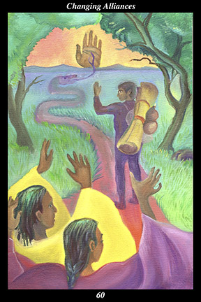

 | IMAGE | A male warrior waves farewell to two warriors, one male and the other female, who wave back. He sets out on a road in the form of a serpent whose tongue touches a welcoming hand at the road’s end. The warrior carries all he needs for a long and arduous journey. The place he leaves is lush with life, whereas his destination lies beyond a wilderness of deserts and mountains.
INTERPRETATION
This hexagram depicts the delicate transition facing those who leave behind one alliance to embark on another. The male warrior symbolizes the disciplined and honorable course of action. The male and female warriors he leaves behind symbolize an individual or group whose vision you no longer share. The way the three warriors wave to each other symbolizes a friendly leave-taking that is without rancor or enmity. That the road is in the form of a serpent means that you do not lose your way, no matter how the road might twist and turn. The serpent’s tongue symbolizes a sense beyond our five senses, which allows us to find our way through life in a direct and intuitive manner. That the serpent’s tongue touches the hand raised in greeting on the horizon means that you rely on your spirit guide to lead you to a new alliance that brings
benefit to all concerned. That the warrior carries all he needs means that your past experience and training have prepared you to undertake this journey. That the place he leaves is lush with life, while his destination lies beyond a wilderness of deserts and mountains, means that you depart the known and familiar for the unknown and unforeseeable. Taken together, these symbols mean that you complete the journey from one alliance to another without weakening yourself or making new enemies.
ACTION
The masculine half of the spirit warrior tempers determination with compassion, sincerity with tact, and movement with grace. Once we find we are no longer compatible with our allies, it is necessary to disentangle ourselves from those allegiances in order to align ourselves with others whose values and actions are in harmony with our own. But if we merely act in a straightforward manner, with no concern for the future of those who have played an important part in our past, then we act decisively but without compassion: in the end, this creates resentments that come back to haunt us in our later endeavors. Similarly, integrity and truthfulness must fill our hearts when making dramatic changes in our lives but our words and actions do not belong solely to ourselves: once we speak and act, we influence others and, if we are not careful and diplomatic outwardly, we find that many of our problems repeat themselves in our new endeavor. In the same way, even though our actions must be timely and sustain a certain momentum, we cannot afford to act clumsily or rudely or impatiently: if we do not cultivate and display poise, grace, and dignity when people are most easily offended, then we enter our next alliance with a proven inability to handle tense and distressing times without becoming unnerved ourselves. For these reasons, it is essential that you maintain a continuity of values in the midst of change, diligently discharging all your responsibilities before moving on to your next relationship. Because you steep yourself in the desire to be part of a more meaningful unity, your actions lead you to a period of more promising camaraderie, collaboration, and creativity.
INTENT
Good endings beget good beginnings. What is easy is starting new relationships, what is difficult is fulfilling them. What is easy is being at our best for a short time with people who do not know us well, what is difficult is being at our best for a long time with people who have come to know us well over a period of years. What is most difficult of all is being at our best when we are bringing a long-standing relationship to a close. It is here we must be careful, paying attention to the details of our departure rather than allowing ourselves to be consumed by the adventure that awaits. Move patiently, be practical, don’t ignore your intuitions: take the time to tie up loose ends, make the effort to ensure that those you leave behind feel strong and secure. Wherever there is a question of inequality or unfairness, it is best to take the loss upon yourself: people do not contest the outcome when they feel victorious. Because you act with dignity and honor, you bring your way of life into greater harmony with your life’s purpose.
SUMMARY
Do not try to jump to the next steppingstone before you have a firm footing on the slippery one you are on. Let your enthusiasm for engaging the new be stronger than your exactness in disengaging from the old and you will suffer needlessly. Consider how you want others to remember you, how you want them to feel about you in the future, and then comport yourself accordingly. Don’t rush.
THE LINE CHANGES
1° When people have little experience, they use a naive form of imagination to fill in the gaps in what they know. This is merely jumping to conclusions and has nothing to do with understanding others. Cultivate friendships with people who live, think, believe, and act differently than you.
2° When people form deep and lasting bonds, it is because they see past appearances and into the dreaming part of each other. This mirroring gaze, where dream and dream recognize one another, is a direct experience of the universality of essence. Open the door wider and all come into view.
3° Roles and responsibilities have to be assigned based on the kind of understanding each possesses. Failure to do this places people in jarring and confusing circumstances. Contentment is more successful than success, so it may be more successful to step back than to step forward.
4° Who the leaders favor demonstrates who they serve and permits you to know their values and ethics. Your own actions demonstrate who you serve and permit you to know your own values and ethics. When your values and ethics differ from the leaders’, do not abandon those you serve.
5° To know your demeanor in the world, watch others’ nonverbal response to your presence. To know your relevance in their lives, watch others’ response to what you say in their presence. To know your influence on the lives of those nearby, watch how they have changed over time.
6° When people have much experience, they should set limits on how much self-examination they engage in. Understanding should be directed outward instead, focusing on ways to improve conditions for people and nature. Use the wisdom you have gleaned from life to improve life.